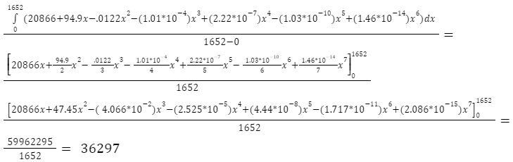

Concept 1
Concept 2
Average Value
by Christopher Tang
Hypixel Network, one of the largest Minecraft server networks globally, experienced significant changes in user activity due to the COVID-19 pandemic. By analyzing the average daily player counts during pre-pandemic, pandemic, and post-pandemic periods as declared by the World Health Organization, we can begin to understand these fluctuations and insights into player behavior in response to global events.
The average on an interval can be found by taking the definite integral of the trend line over one of the designated time periods.
- Intervals according to WHO
- Pre-Pandemic: Jul 23 2015 - Jan 30 2020
- Pandemic: Jan 30 2020 - May 5, 2023
- Post-Pandemic: May 5, 2023 - Feb 19 2024
Pre-Pandemic
Before the public health emergency was declared, Hypixel averaged around 36297 players a day.
Pandemic

During the public health emergency (highlighted by the green section in the graph), the average players per day (calculated by the same integral with different bounds) rose to 93868 players
Post-Pandemic

After the crisis, the average daily player dropped to around 80859 players
Analysis
The significant rise in player activity correlate with and may be caused by the worldwide actions being taken at that time by countries in an attempt to decrease human-human contact to reduce the spread of the disease. For many countries, this included the closing of many businesses and public places, leading to an increase in the time many individuals spent at home. Boredom may have driven many to online entertainment such as video games like Minecraft. After this period ended, and many regulations were lifted, people resumed their previous routines, causing the average to drop again.
Concept 4
Concept 5